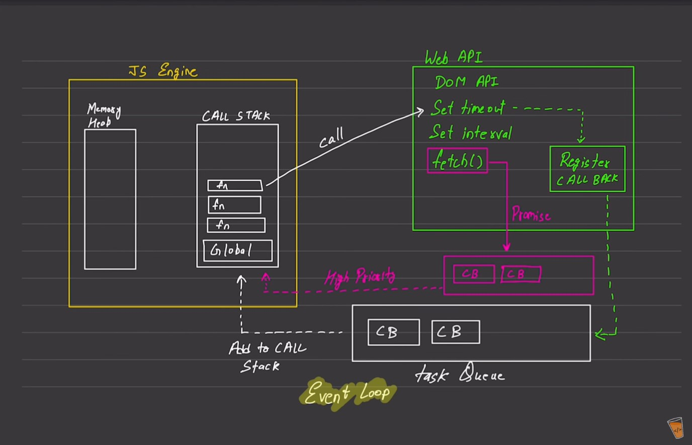

Async Code
- JavaScript
-
Synchronous: it help Synchronous, where code are excecuted by
linewise.
-
Sigle thread: it excecute in a single thread. it also slow but not
feel it slow.
- Both are default JavaScript(Synchronous, Execution Context).
- Execution Context
- excete one line of code at a time.
- -console.log(-1)
- -console.log(-2)
- Blocking Code v/s Non-Blocking Code
- Blocking Code: => Block the flow of program. => Read File Sync.
-
Non-Blocking Code: =>Does not block Execution. => Read File Async.
-
This Diagram help to understand (How work Blocking Code & Non-Blocking
Code).
-

-